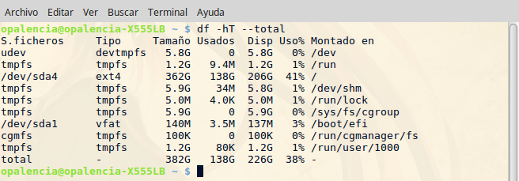

Mostrar informacion del uso del disco duro > df¶
Nombre del comando: df
Man page online: https://linux.die.net/man/1/df
Descripción: df muestra la cantidad de espacio de disco disponible en el sistema de archivos. Si no se proporciona un nombre de archivo, se muestran todas las particiones accesibles que están montadas. Solo muestra el uso de los discos cuando éstos están montados.
Man page local: $ man df o $ man df > df.txt
Instalado por defecto: Sí, al menos en Linux Mint.
Algunas Opciones:
-h, --human-readable Tamaños de impresión en potencias de 1024 (por ejemplo, 1023M).
-t, --type=TYPE Limitar el listado a sistemas de archivos de tipo TYPE.
-T, --print-type Imprimir tipo de sistema de archivos.
--total Evite todas las entradas insignificantes para el espacio disponible y produzca un gran total.
Ejemplo 1: $ df -hT --total, en este ejemplo se muestra toda la información relevante de los sistemas de archivos accesibles, tales como su tipo de archivos, el tamaño, la cantidad usada en múltiplos y porcentaje, la cantidad disponible y el lugar de montaje. Como se aprecia en la imagen de arriba, se muestran varios sistemas de archivos del tipo tmpfs, éstos sirven como memoria de intercambio y no se graban permanentemente; más bien, funcionan igual que la memoria RAM. Con los parámetros hT y total le digo que me muestre las cantidades en datos fáciles de leer e interpretar.
Ejemplo 2: $ df -h -t ext4, en este ejemplo le digo que muestre los sistemas de archivos del tipo ext4 con sus respectivos datos agrupados de forma que sean legibles para cualquier persona.